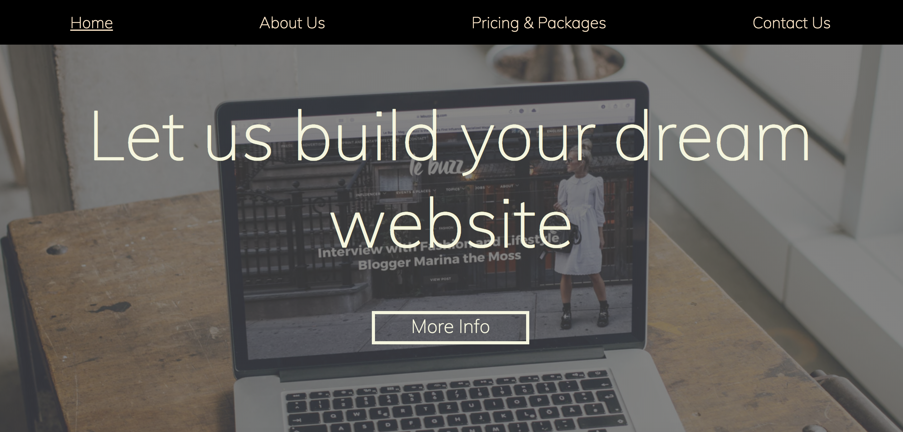
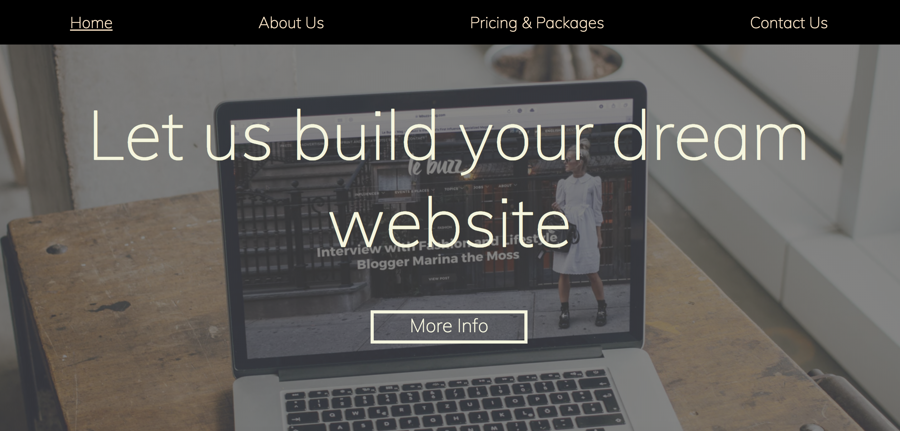

Business Website

 

Business Website is a Front-end webpage using React to mimic the ever so popular parralax webpage design. As it has gotten more popular over time it is important to offer it as an option to consumers. Using the React framework, it offers a website with a modern feel using a cutting edge Javascript library.
Visit the site -->